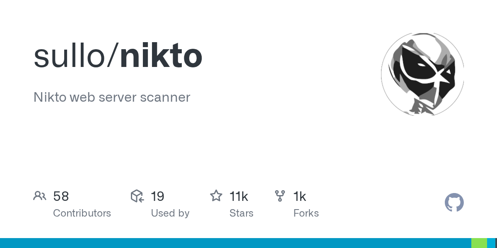
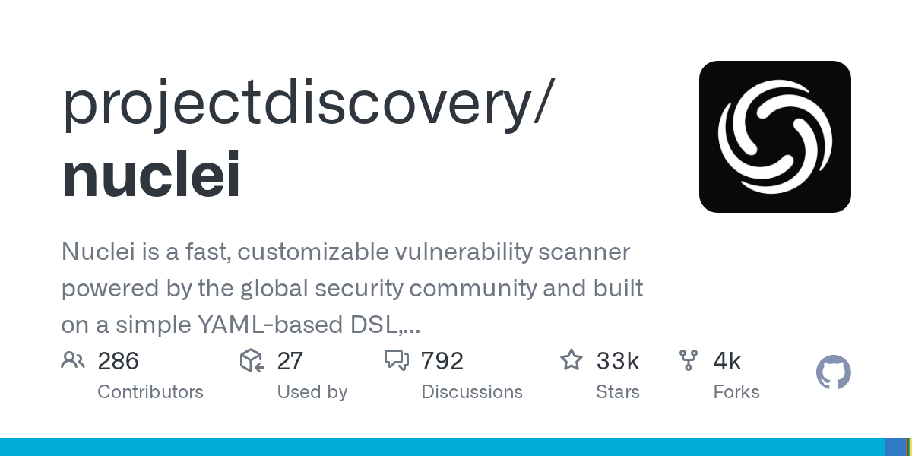
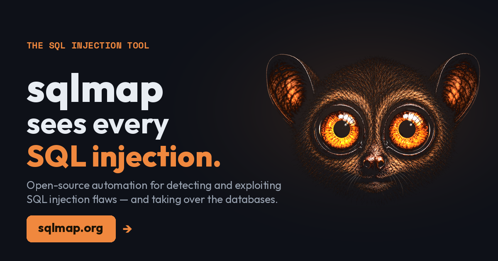
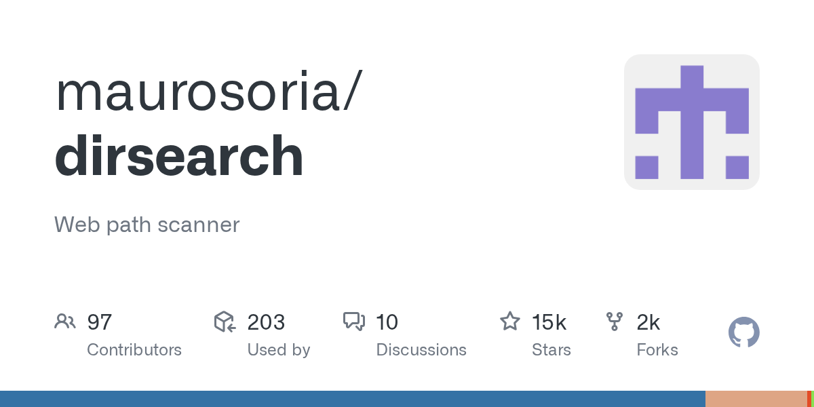
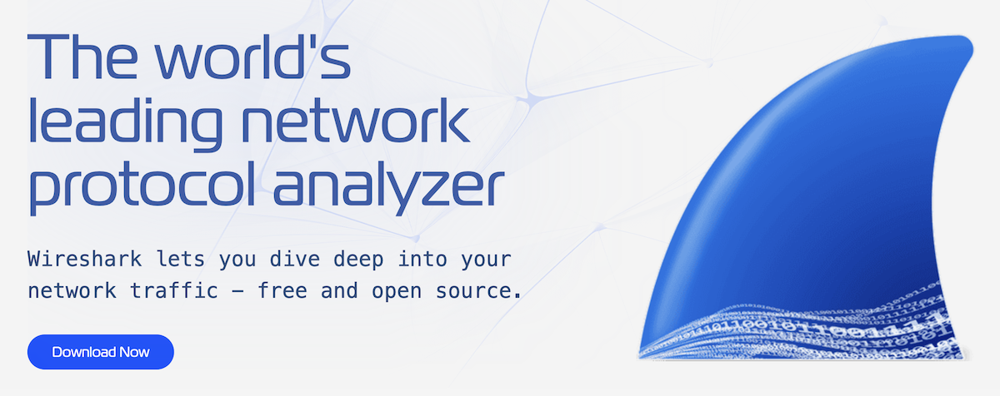
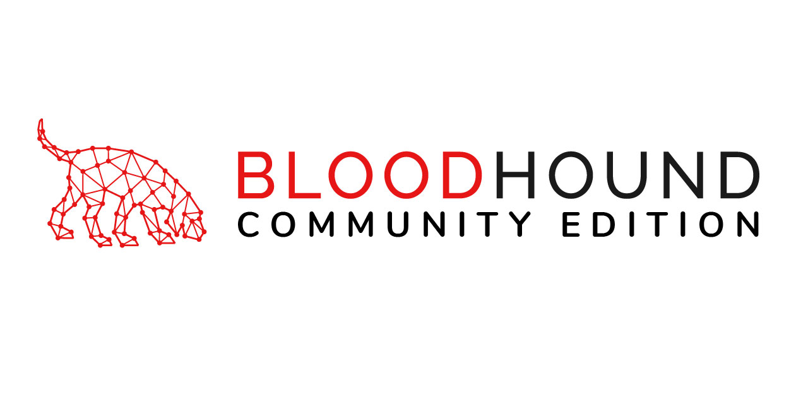
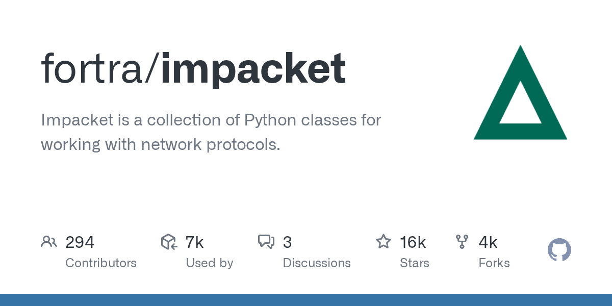
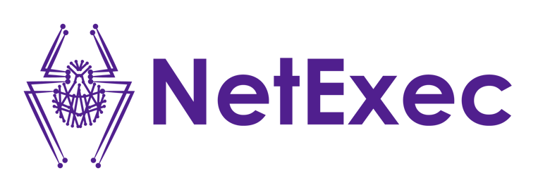
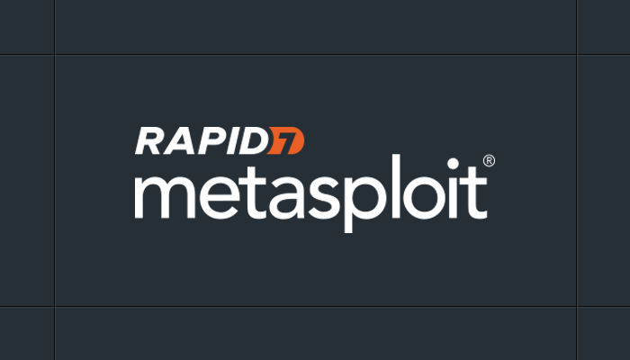

Burp Suite
Перехватывающий прокси для просмотра и изменения HTTP-запросов, анализа поведения приложения и ручной проверки находок.
Набор средств зависит от объекта и этапа проверки. Результаты автоматизации требуют ручной проверки и интерпретации.
Перехватывающий прокси для просмотра и изменения HTTP-запросов, анализа поведения приложения и ручной проверки находок.
Открытый прокси и сканер для изучения HTTP-взаимодействия, построения карты приложения и автоматизированных проверок.

Проверяет веб-сервер на известные проблемы, устаревшее ПО, опасные файлы, доступные каталоги и ошибки конфигурации.

Выполняет шаблонные проверки известных уязвимостей и небезопасных конфигураций, подходит для повторяемой автоматизации.

Применяется для подтверждения и исследования признаков SQL-инъекций в рамках согласованной проверки.

Помогает находить доступные каталоги и файлы веб-приложения, отсутствующие в обычной навигации.
Обнаружение узлов, открытых портов, сетевых сервисов и их предполагаемых версий на этапе разведки.
Сканирование инфраструктуры на известные уязвимости, отсутствующие обновления и распространённые ошибки конфигурации.

Захват и анализ сетевого трафика, протоколов и взаимодействия между компонентами системы.

Визуализирует связи, делегированные права и потенциальные пути повышения привилегий в Active Directory.

Набор Python-компонентов для разрешённого взаимодействия с протоколами Windows-сетей, включая SMB, Kerberos и NTLM.

Автоматизирует оценку безопасности Windows-инфраструктуры и работу с SMB, LDAP, WinRM и другими сетевыми службами.

Используется для контролируемого подтверждения возможности эксплуатации обнаруженных уязвимостей в разрешённой области тестирования.